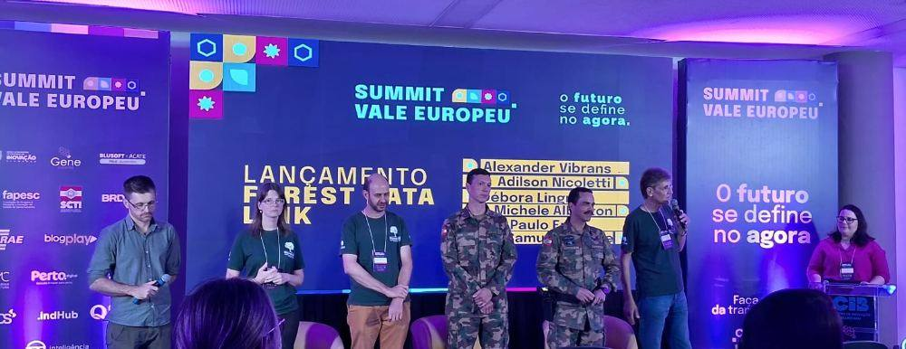

Participação no Summit Vale Europeu
23 de Novembro de 2023
Esta parte da página usa um recurso interativo do Google Sites que não pôde ser copiado. Ver no site atual ↗

No dia 22 de novembro de 2023, a equipe do FlorestaSC junto com a Polícia Militar Ambiental (PMA), participou do Summit Vale Europeu, para realizar o lançamento do produto Forest Data Link.
O evento ocorreu no Centro de Inovação Blumenau e foi organizado pelo Instituto Gene CIB - Centro de Inovação Blumenau Blusoft e Conexão ESG.
O Forest Data Link consiste em um conjunto de ferramentas propostos pelo FlorestaSC, em apoio às atividades da PMA. Estas ferramentas irão facilitar o acesso da PMA aos dados do FlorestaSC, e também servirão como apoio ao registro e coleta de dados nas atuações da PMA em campo e à elaboração de laudos e pareceres.
Dentre as ferramentas apresentadas, destacou-se os aplicativos de dispositivo móvel para uso em campo, como o Avenza Maps e o QField.
O Avenza Maps é utilizado para navegação em tempo real de maneira offline. O aplicativo carrega e lê mapas georreferenciados em formato pdf. Para cada unidade da PMA, foram gerados mapas em PDF contendo informações geoespaciais sobre: regiões fitográficas, limite de municípios, limite das unidades da PMA, área potencial de restinga, uso e cobertura da terra e unidades de conservação.
O QField é um aplicativo para smartphone que carrega dados geoespaciais do QGIS. Em campo, é possível utilizar o QField para cadastrar dados e fotos, desenhar polígonos e calcular sua área, e traçar linhas para cálculo de distâncias. Estas informações coletadas em campo podem ser posteriormente transferidas para o QGIS para uso no desktop. Para auxiliar no aprendizado do aplicativo, foi elaborado um tutorial para uso da PMA.
Também foi apresentado o Painel Interativo de dados (dashboard) que foi elaborado com o intuito de reunir em um único local diversas informações sobre a ocorrência das espécies nas Unidades da PMA, possibilitando aos usuários a realização de consultas rápidas e variadas de dados.
No painel é possível ter acesso: aos mapas feitos para carregar no Avenza; às listas das espécies mais abundantes nas unidades da PMA; às fotos das principais características das espécies (folha, fruto, flor, tronco) depositadas no site da Flora Digital de Santa Catarina (UFSC); e às descrições da floresta avaliada nas parcelas do FlorestaSC.
Confira como ficou o Painel Interativo da PMA: https://lookerstudio.google.com/reporting/dab44276-e21c-42f0-8657-bd7a8a5fc3fa/page/KtAKD
Além das ferramentas acima mencionadas, foram mostradas outras fontes de consulta de dados do FlorestaSC, como o Sinflor - Sistema de Informações Florestais, a Plataforma de Mapas e o Portal do projeto.
Confira abaixo outras fotos do evento:
FlorestaSC no Seminário do IFN Brasil
10 de Novembro de 2023
Nos dias 6 e 7 de novembro, o coordenador do FlorestaSC participou a convite do Serviço Florestal Brasileiro (SFB/MMA) do Seminário Nacional de Alinhamento Estratégico do Inventário Florestal Nacional do Brasil realizado em Brasília. O objetivo do seminário foi de fornecer insumos estratégicos e técnicos para fortalecer a execução do IFN e aumentar seu impacto em políticas públicas nacionais e nos compromissos internacionais do Brasil. O evento contou com a presença do Diretor Geral do SFB, Garo Batmanian, do Coordenador Geral de Informações Florestais do SFB, Humberto Navarro e do Diretor do IFN Brasil, Tiago Cruz, bem como de participantes de órgãos públicos e universidades de todas as regiões do Brasil.
As experiências de Santa Catarina na coleta, inclusive usando tecnologias novas, no processamento e na disseminação e aplicação de dados das florestas catarinenses foram apresentados pelo prof. Alexander C. Vibrans, sob o título IFN Santa Catarina – 16 anos FlorestaSC.
No segundo dia, quatro grupos de trabalho foram formados para discutir e propor ações estratégicas sobre os temas Metodologia do IFN, Disseminação de dados, Arranjos Institucionais e IFN e políticas públicas.
Coleta de dados em campo com uso de tablet
20 de Outubro de 2023
O avanço da tecnologia tem possibilitado inovações importantes em várias áreas, sobretudo da pesquisa florestal. A equipe do FlorestaSC procura estar sempre antenada nas tendências tecnológicas e tem buscado modernizar a coleta e o processamento de dados, seja através da aplicação de técnicas avançadas de sensoriamento remoto e de machine learning para monitorar as mudanças dos usos da terra; uso da linguagem da programação para realizar diversas análises complexas; uso de drone para coleta de dados nas parcelas, dentre outros.
Neste ano, a equipe de campo passou a utilizar um tablet para registro dos dados levantados nas Unidades Amostrais do inventário florestal. Anteriormente, os registros foram feitos em fichas de papel, o que demandou muitas horas de digitação destes dados para poder incorporá-los ao banco de dados.
O uso do tablet demandou a implantação de duas rotinas no nosso banco de dados SINFLOR (www.sinflor.com.br), uma permitindo a exportação de dados das medições anteriores de determinada Unidade Amostral em formato excel, para importação ao tablet; outra para reimportar os dados da nova medição do tablet ao SINFLOR, seguido de uma análise de consistência destes dados. As alterações foram implantadas pelo analista de sistemas Vilmar Orsi, responsável desde 2009 pelo desenvolvimento e pela manutenção deste banco de dados do FlorestaSC.
Para racionalizar o uso do tablet em campo, as planilhas foram customizadas, facilitando a navegação dentro das planilhas e a digitação dos dados das novas medições. Em pouco tempo, as novas rotinas foram adotados com sucesso pelas equipes do FlorestaSC em campo e no laboratório, gerando uma considerável economia de tempo e eliminação de fontes de erros.
Uso de drone em parcelas do FlorestaSC
19 de Abril de 2023
Em uma ação inédita, o FlorestaSC iniciou a obtenção de dados com drone nas parcelas permanentes. Com o drone, são adquiridas imagens multiespectrais que serão processadas para extrair variáveis da estrutura da floresta e identificação das espécies. A atividade está sendo conduzida pelo pesquisador do pós-doutorado Daniel Augusto da Silva (FlorestaSC/FURB), em parceria com a Epagri e Udesc.
A primeira coleta de dados foi realizada na semana passada (15/04) na parcela nº 285, em Águas Mornas (SC), localidade de Vargem Grande. Os equipamentos utilizados foram Os equipamentos utilizados foram o drone/VANT, sensor multiespectral, termal e Lidar.
Participaram da coleta, Alexander Christian Vibrans, coordenador do FlorestaSC, MSc. Adilson Luiz Nicoletti e Dr. Daniel Augusto da Silva, pesquisadores nas áreas de sensoriamento remoto e modelagem macro-ecológica, os quais fizeram medições na vegetação e demarcação de pontos para georreferenciamento; os pesquisadores da a Epagri/CIRAM Dra. Cristina Pandolfo, coordenadora do projeto “Uso de imagens multiespectrais e termais de VANT para vistoria de lavoura” e Dr. Fábio Martinho Zambonim coordenador projeto “Base PRA”*; e o doutorando do PPGPlan da UDESC/Geolab, MSc. Guilherme Braghirolli, que auxiliou com o uso do drone multiespectral.
A ação busca avaliar as potencialidades de sensores multiespectrais, termais e LiDAR para gerar métricas estruturais de florestas, e através de pesquisa científica, propor métodos de avaliação que permitam reduzir a necessidade de medições, tornando os inventários mais eficientes e operacionais.
Confira algumas fotos:
FlorestaSC no XX Simpósio Brasileiro de Sensoriamento Remoto
13 de Abril de 2023
Ocorreu em Florianópolis (SC), entre os dias 02 e 05 de abril, o XX Simpósio Brasileiro de Sensoriamento Remoto - SBSR, organizado pelo INPE e Selper Brasil. O Simpósio é realizado a cada dois anos, mas por conta da pandemia do coronavírus, o evento não ocorria desde 2019. O SBSR tem como objetivo reunir a comunidade técnico-científica e o usuário empresarial das áreas de Sensoriamento Remoto e Geotecnologias para a apresentação de trabalhos e debates sobre as pesquisas, desenvolvimento tecnológico, ensino e a política científica realizados no país e no mundo.
Participaram no evento os pesquisadores do FlorestaSC: Alexander Christian Vibrans, Adilson Luiz Nicoletti e Daniel Augusto da Silva, além dos colaboradores do projeto Veraldo Liesenberg e Murilo Schramm da Silva.
Durante o evento, os pesquisadores puderam conhecer novas tecnologias, ferramentas e metodologias em Sensoriamento Remoto por meio de palestras e cursos, bem como ampliar contatos técnico-científicos.
Os pesquisadores do FlorestaSC apresentaram alguns trabalhos no evento para divulgar estudos realizados pelo projeto em sensoriamento remoto:
- Mapeamento da cobertura florestal de Santa Catarina (Alexander Vibrans) Leia – Texto e Painel
- Classificação das formações da Restinga Catarinense com uso do algoritmo Random Forest (Adilson Nicoletti) Leia – Texto e Painel
- Fragmentação florestal diminui a área foliar em florestas nativas (Daniel Silva) Leia – Texto e Painel
- Backdating of invariant pixels: comparison of algorithms for land use and land cover change (LUCC) detection in the subtropical brazilian atlantic forest. (Murilo Schramm) Leia – Texto e Painel
Confira algumas fotos do evento:
Agora somos o FlorestaSC! Mudamos de nome e logomarca!
07 de Março de 2023
Mas por que mudamos de IFFSC para FlorestaSC?
A equipe do IFFSC resolveu atualizar a identidade visual do inventário catarinense para facilitar a comunicação com diferentes públicos. As mudanças de nome e logomarca foram desenvolvidas com ajuda da equipe da “Repúblika”, agência experimental de publicidade do curso de Publicidade e Marketing da FURB. O job foi coordenado pela professora Fabrícia Durieux Zucco e do professor Leandro Werner Ribeiro (“Maka”) e executado por toda a equipe de bolsistas da agência; a todos as (os) envolvidas (os), o nosso “muito obrigado” por este trabalho!
Está é a nossa nova logomarca, inspirada na imbuia, árvore símbolo de Santa Catarina.
Sob esta marca trabalhamos três grupos de ações:
Aqui estão reunidos os trabalhos de monitoramento do desenvolvimento das florestas; realizamos os levantamentos de dados em campo, o processamento dos dados levantados e do material botânico coletado nos laboratórios da FURB, bem como a análise e publicação dos resultados destas análises.
Sob está sigla reunimos os trabalhos de sensoriamento remoto e geoprocessamento que consiste no mapeamento dos remanescentes florestais e dos demais usos da terra em Santa Catarina, bem como dos estudos das mudanças observadas ao longo do tempo.
A equipe do EducaSC desenvolve ações de divulgação científica e educação florestal, especialmente para o público escolar. Estamos elaborando, junto com um grupo de professores da rede estadual, materiais educativos para uso no ensino fundamental, baseados nas informações geradas pelo MonitoraSC.
Junto com estas mudanças, estamos implantando uma repaginação do portal. Pretendemos facilitar o acesso aos conteúdos pelos diversos usuários, o publico escolar, o público geral, os técnicos e pesquisadores que estão procurando no portal dados e informações sobre as florestas catarinenses.
Ah, também mudamos o nosso endereço para www.floresta.sc.gov.br
Importante: quem acessar o endereço antigo (www.iff.sc.gov.br) será automaticamente redirecionado para o novo.
Algumas das mudanças serão implantadas sucessivamente.
Acesse e conte nós o que você achou do novo portal! Sua opinião é muito importante para nós!
Acompanhe também nossas redes sociais para ficar por dentro das ações do projeto.
FlorestaSC
florestasc@furb.br 47 3221-6100
Página migrada de floresta.sc.gov.br.